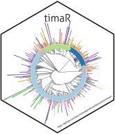

2 Preparing inputs
Adriano Rutz
2024-10-21
Source:vignettes/articles/II-preparing.Rmd
II-preparing.RmdThis vignette describes the main steps of the annotation process.
Structural annotations of your features
For the moment, we support 3 different types of annotations:
- Internal MS1 exact mass-based library search
- Internal MS2 library search (experimental and in silico)
- SIRIUS
MS1-based
These annotations are of the lowest possible quality. However, they allow to annotate unusual adducts, in-source fragments thanks to different small tricks implemented. Try to really restrict the adduct list and structure-organism pairs you want to consider as possibilities explode rapidly.
Spectral
We use the spectral entropy from https://doi.org/10.1038/s41592-021-01331-z for
matching.
In case, a python implementation of the spectral matching steps is also available at: https://github.com/mandelbrot-project/spectral_lib_matcher. The python version also includes other similarity measures.
Fingerprint-based
Sirius
As SIRIUS jobs are long to perform, we provide example SIRIUS workspaces (both SIRIUS 5 and 6). Note that spectral matches from SIRIUS are not supported for now. They have been generated on the 20 first lines of the example MGF with the following command:
# this is run on SIRIUS 6
sirius \
--noCite \
--input=data/source/example_spectra_mini.mgf \
--output=data/interim/annotations/example_sirius.sirius/ \
--maxmz=800 \
config \
--AlgorithmProfile=orbitrap \
--StructureSearchDB=BIO \
--Timeout.secondsPerTree=10 \
--Timeout.secondsPerInstance=10 \
formulas \
zodiac \
fingerprints \
classes \
structures \
denovo-structures \
summaries \
--full-summary
# this is run on SIRIUS 5
sirius \
--noCite \
--input data/source/example_spectra_mini.mgf \
--output data/interim/annotations/example_sirius/ \
--maxmz 800 \
config \
--AlgorithmProfile orbitrap \
--StructureSearchDB BIO \
--Timeout.secondsPerTree 10 \
--Timeout.secondsPerInstance 10 \
formula \
zodiac \
fingerprint \
structure \
compound-classes \
write-summaries \
--full-summaryThese parameters were not optimized and were only used to give an
example output. If you are using the cli, do not forget to generate the
summaries with the --full-summary option, or if you use the
gui, generate them by clicking the corresponding icon. You can get an
example running:
tima:::get_example_sirius()The sirius workspace should ideally have
yourPattern_sirius as name and be placed in
data/interim/annotations (else it will not be found by
default except you provide the right path).
If you want to know how we attempt to combine the CSI score with other ones, see R/transform_score_sirius_csi.R Note that starting from SIRIUS6, the approx confidence score is the one considered, and not the exact one.
Annotations are now prepared and can be used for further processing. Your features are not only informed with structural information but also, chemical class information. The latter might be corresponding or not to the chemical class of your annotated structure, depending on the consistency of your annotations.
Chemical class annotation of your features
Within our workflow, we offer a new way to attribute chemical classes to your features. It is analog to Network Annotation Propagation, but uses the edges of your network instead of the clusters. This makes more sense in our view, as also recently illustrated by CANOPUS.
We are currently also working on CANOPUS integration for chemical class annotation but this implies way heavier computations and we want to offer our users a fast solution.
Generating a network
A network is generated during the process. The edges are created
based on the spectral entropy similarity calculated between
your spectra (see https://doi.org/10.1038/s41592-021-01331-z).
If needed, you can get an example of what your minimal feature table should look like by running:
tima::get_example_files(example = "features")Biological source annotation
This step allows you to attribute biological source information to your features. If all your features come from a single extract, it will attribute the biological source of your extract to all your features. If you have multiple extracts aligned, it will take the n (according to your parameters) highest intensities of your aligned feature table and attribute the biological source of corresponding extracts.
Filter annotations (based on retention time)
This step allows you to filter out the annotation of all the tools used, based on your own internal (experimental or predicted) retention times library. It is optional. If you do not have one, it will simply group the annotations of all tools.
You are almost there! See already all the steps accomplished!
We now recommend you to read the next vignette.